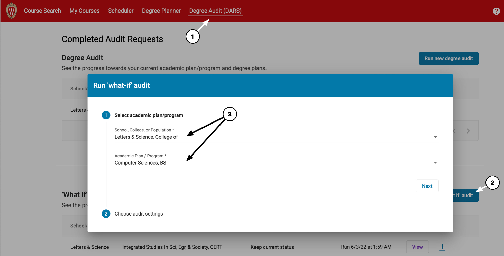

Welcome, incoming CS freshmen! I threw together this page with things that I personally found helpful to know. Hopefully it helps you as well.
Core CS Classes
Things to note:
I am not a data-science major, so my map doesn’t include those courses. The CS/DS double-major is popular, but you would need to ask someone else about it.
If you make a data science chart and want to add it, open an issue or make a pull request on the Github page
CS 200 is not a requirement for the major, but is a good introduction. If you have no experience, start with CS 200. People with experience can skip 200, they usually have a project that they ask you to complete to see if you’re ready.
Math/CS 240 covers discrete math, proof-writing, and induction.
Math people usually say it’s easy, I found it to be of medium difficulty, and was glad that I had the data-structures background from 300 before I took it. Thus I put a special arrow on the map for math people to jump right in.
This class is taught by the CS department in the fall, and the Math department in the spring. Both departments claim the offerings are identical, and the curriculums are now more aligned (but students still debate their comparative virtues).
This chart is very sparse, there are a lot more CS classes after you complete the basic requirements in the yellow box. Please don’t think that this is a representative list of the SW/HW, theory, application, and elective offerings!
Spanish
I include this here to illustrate the opportunity for retroactive language credits.
If you have already know semesters-equivalent of a language, placement testing will give you “completed units” of that language, which count towards that L&S foreign-language requirement. However, these do not count for any credit.
You can earn retroactive credit for the first level of a language taken on campus, if:
it is within your first 30 credits on campus (AP credits don’t count, non-degree transfer credits don’t count)
A DARS audit will tell you what you have completed and what you still need to graduate. To run a DARS audit, go to Course Search & Enroll at https://enroll.wisc.edu, and select “Degree Audit (DARS)” at the top of the page. Then follow these steps to see what you would need for a given degree plan:

Created by Michael Noguera as an unofficial resource for those going to SOAR. Last updated June 2022.